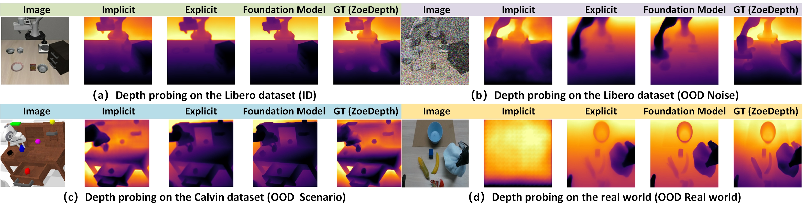
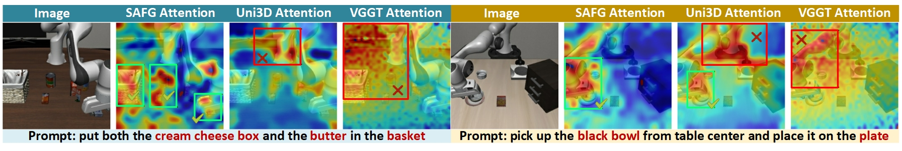
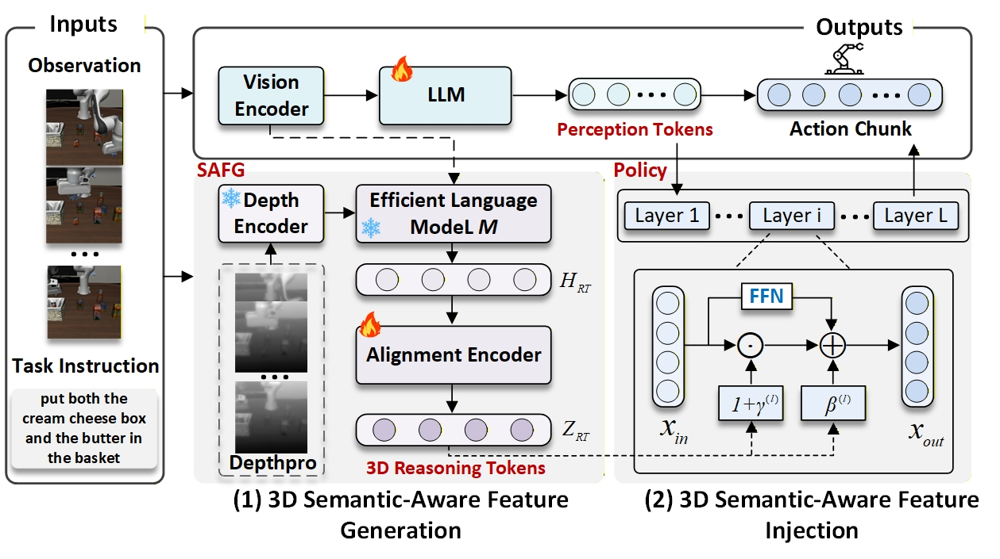
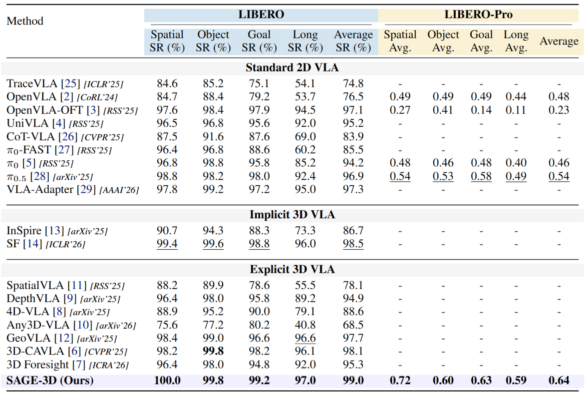
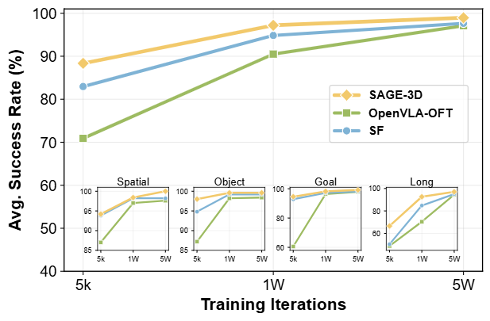
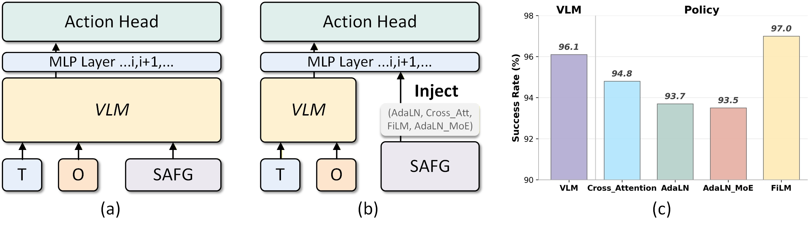
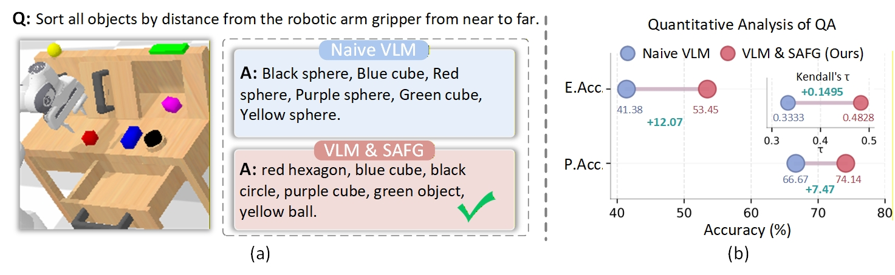
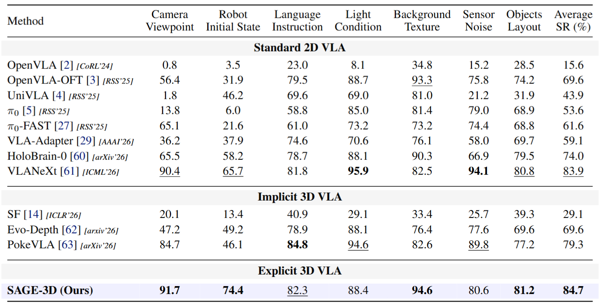
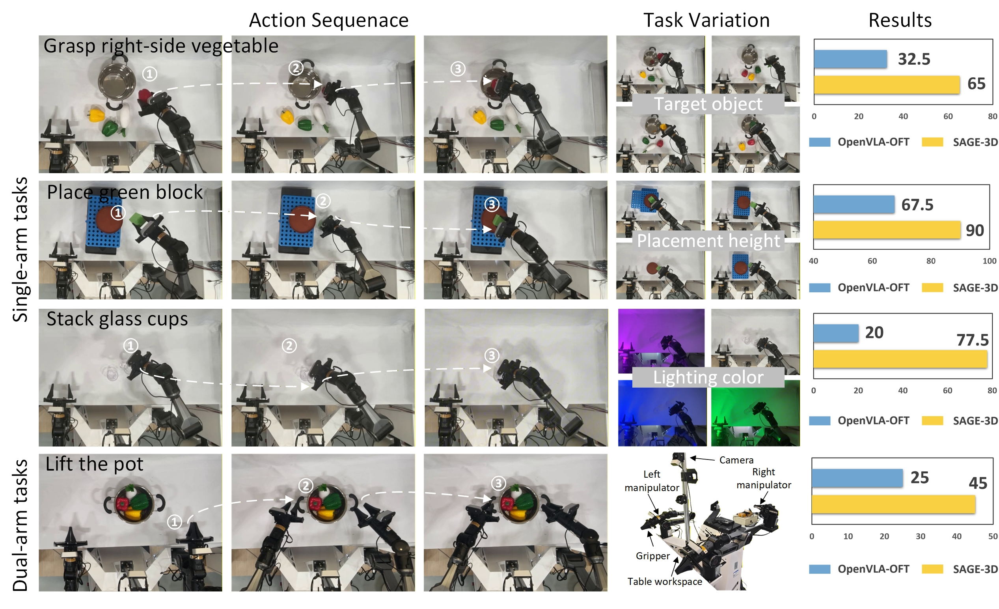

We first revisit implicit and explicit 3D VLA paradigms through representation analysis. Depth probing across LIBERO in-domain scenes, noisy LIBERO scenes, CALVIN OOD scenes, and real-world images shows that implicit SF representations degrade under distribution shift, whereas explicit geometry preserves more stable depth structure.

Geometry alone is insufficient: geometry-centric features can emphasize salient but task-irrelevant regions. Under the same VLA backbone and training setup, SAFG features yield attention that is more concentrated on instruction-relevant objects, supporting the design principle of jointly organizing 3D structure around task semantics and affordances.

SAGE-3D augments a VLA backbone with a 3D Semantic-Aware Feature Generator (SAFG). The VLA branch produces perception tokens from visual observations and task instructions, while SAFG processes RGB semantics, monocular depth, and the instruction to generate 3D Reasoning Tokens. An alignment encoder maps these tokens into the action-decoding space.
Instead of simply concatenating geometry with visual tokens, SAGE-3D injects the 3D Reasoning Tokens into the action head through a FiLM-based geometry-conditioned decoder. The resulting scale and shift parameters modulate policy features so that task-relevant geometry directly influences action generation while preserving the pretrained VLM semantics.

On LIBERO, SAGE-3D obtains 100.0 / 99.8 / 99.2 / 97.0 success rates on SPATIAL / OBJECT / GOAL / LONG, for an average of 99.0%. On the zero-shot LIBERO-Pro benchmark, it reaches an average success rate of 0.64, with gains especially visible under position and task variations.
SAGE-3D also converges more efficiently: at matched training iterations, it consistently achieves higher average success than OpenVLA-OFT and SF. The improvement is most pronounced on the GOAL and LONG suites, where spatial reasoning and long-horizon error accumulation are more challenging.


Policy-side injection is more effective than VLM-side injection, and FiLM gives the strongest result among the tested fusion mechanisms, reaching 97.0% on LIBERO-LONG. This supports using semantic-aware geometry to modulate the action branch directly.

Frozen SAFG also improves zero-shot gripper-distance sorting on 500 CALVIN ABC→D frames. Relative to a naive VLM, VLM+SAFG improves exact accuracy by +12.07%, pairwise order accuracy by +7.47%, and Kendall's τ by +0.1495.

Without additional fine-tuning, SAGE-3D achieves 84.7% average success on LIBERO-PLUS across camera viewpoint, robot initial state, language, lighting, background, sensor-noise, and object-layout perturbations. It obtains the strongest reported average in the paper and is especially robust to camera viewpoint, robot-state, background-texture, and object-layout shifts.

On the AgileX real-robot setup, SAGE-3D improves OpenVLA-OFT on all four evaluated tasks: 32.5% → 65% for grasping the right-side vegetable, 67.5% → 90% for placing the green block, 20% → 77.5% for stacking glass cups under lighting shifts, and 25% → 45% for the dual-arm pot-lifting task.
@inproceedings{ding2026sage3d,
title = {SAGE-3D: Semantic-Aware 3D Representations for Generalizable Vision-Language-Action Models},
author = {Pengxiang Ding and Xuanxuan An and Kexian Yu and Haoying Wang and Minghui Lin and Xuhao Wan and Wenxuan Song and Han Zhao and Yihao Wang and Donglin Wang and Ning Ding},
booktitle = {Conference on Robot Learning (CoRL)},
year = {2026}
}